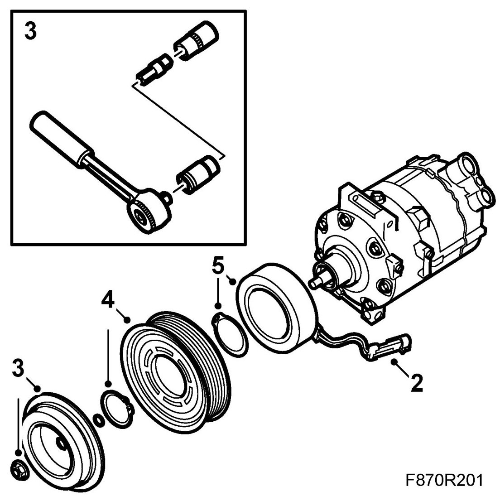

Compressor Clutch: Service and Repair
Electromagnetic Clutch, A/C Compressor
IMPORTANT: To avoid contaminating the system, clean the area around the parts being function and service life of the system.
To remove
1. Remove AC compressor, B207 or AC compressor, Z19
2. Dismantle the compressor's ground cable and the locking plate from the compressor housing.

3. Dismantle the driver by using a 14 mm spanner and a suitable support. Pull it out of the shaft.
4. Dismantle the circlip that holds the belt pulley and lift off the belt pulley.
NOTE: If the belt pulley jams, knock the edge using a plastic mallet so that it becomes loose.
5. Dismantle the circlip holding the magnet winding and lift off the magnet winding.
NOTE: If the magnet winding jams, carefully pry using a screwdriver so that the guide pin loosens from the slot.
To fit
1. Position the magnet winding in position with the guide pin in the slot on the compressor housing. Check that the cables are routed correctly. Fit the circlip.
2. Fit the belt pulley and fit the circlip.
3. Put the shim in the driver and position the driver on the shaft. Tighten the screw.
4. Measure the play between the driver and the belt pulley using a feeler gauge. The play should be 0.5 ± 0.15 mm. Adjust the play if necessary but changing the shim on the compressor shaft.
NOTE: The top of the feeler gauge must be angled to measure the play.
5. Fit the compressor's ground cable and locking plate on the compressor housing.
6. Fit A/C compressor, B207 or A/C compressor, Z19.